Rosie Mai
Clients:
Hermanas Cafe
Nokia Podcast
Personal:
The Vietnamese Women's Museum: rebrand
Vowels Cafe: branding
Poster Collection
Mantra Merch
Wikibook: 'Films that are considered the worst'
2019 Ascenders
Nokia Podcast
Vowels Cafe: branding
Poster Collection
Mantra Merch
Wikibook: 'Films that are considered the worst'
2019 Ascenders
Poster Collection
Manifesto Posters
Based on Tristan Tzara’s 1918 ‘Dada Manifesto’, the manifesto poster was an experiement in converting main ideas and events that happened relating to Dada movement into graphic elements.


Ky Ta by The Nutshell
'Ky ta' is a campaign created by The Nutshell in Saigon, Vietnam, aimed to encourage people to express their opinions and thoughts about beauty standard and unique characteristics on their bodies.
My submissions focuse on the shapes of different parts on the body such as hips or thighs, expressing challenges in trying to fit in clothes that are designed to for certain body types.


Troi Collection
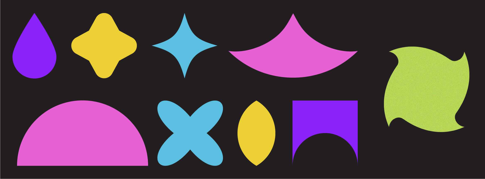 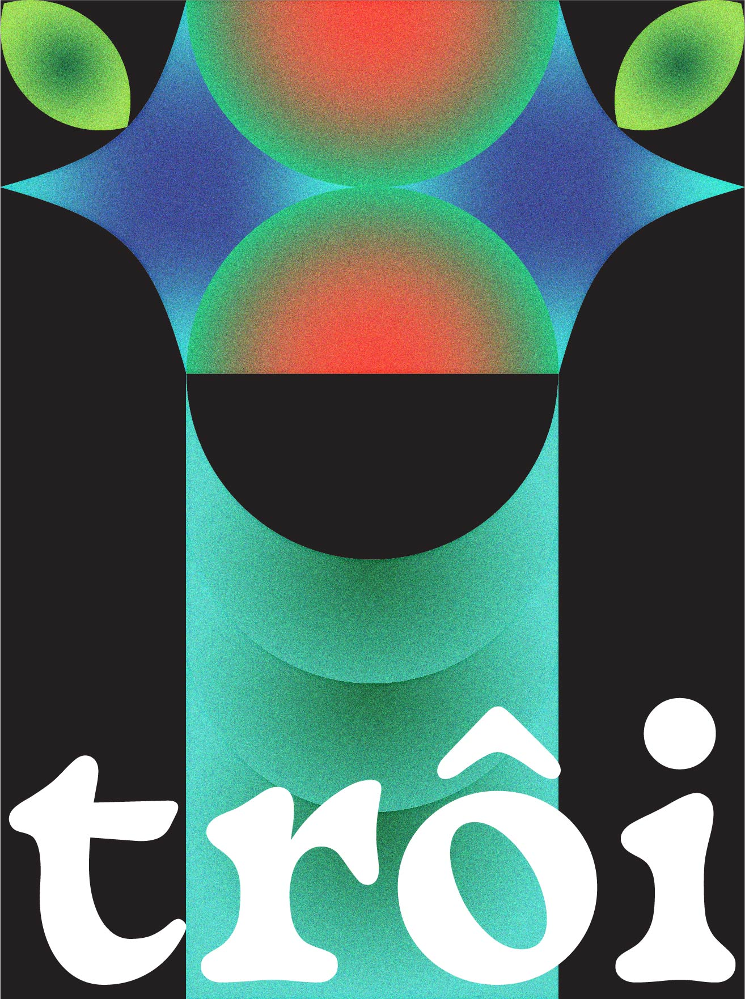
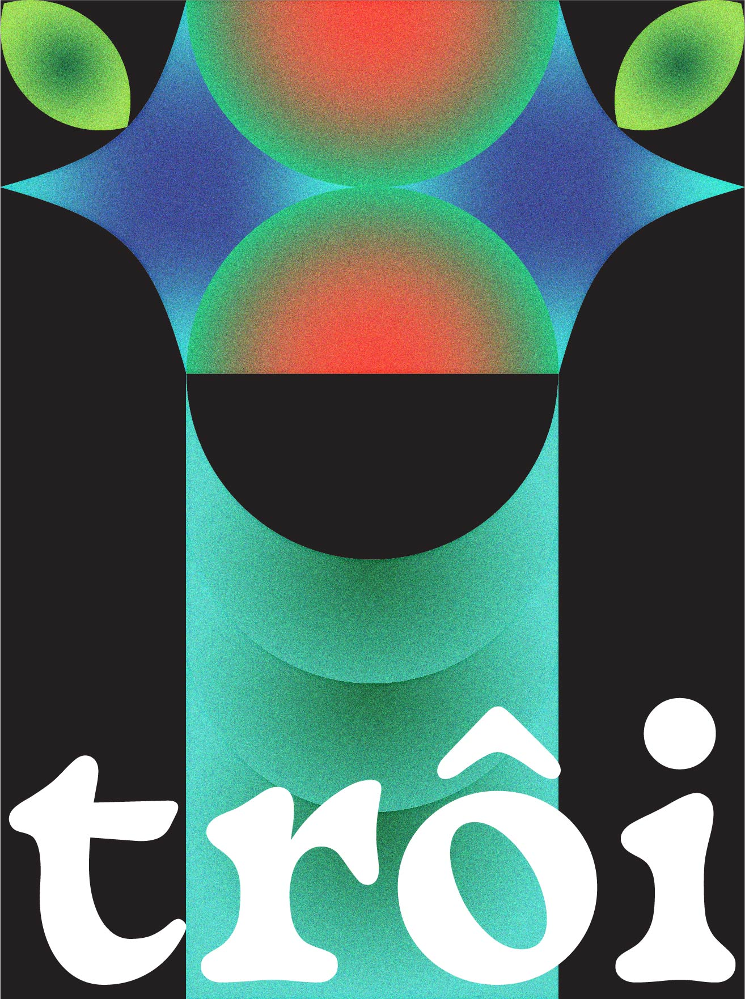


Album Posters
 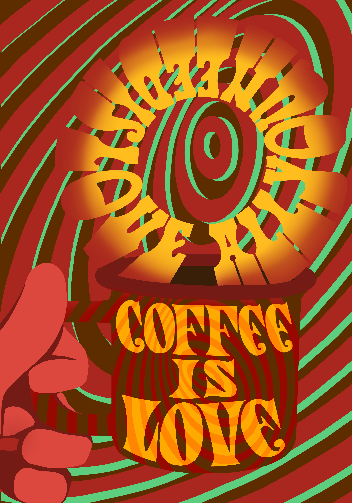
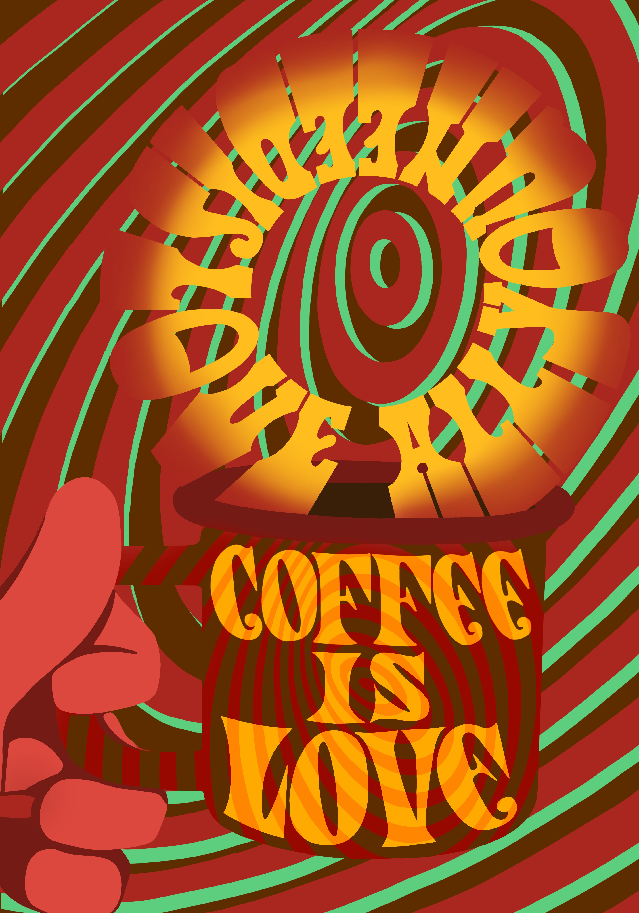
 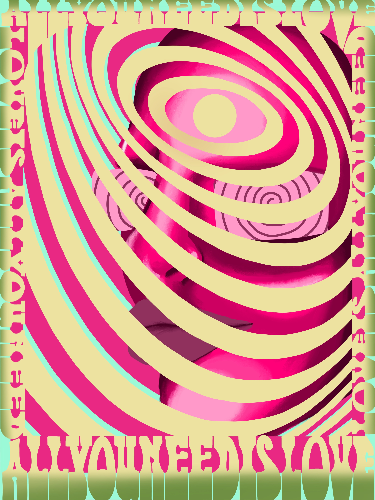
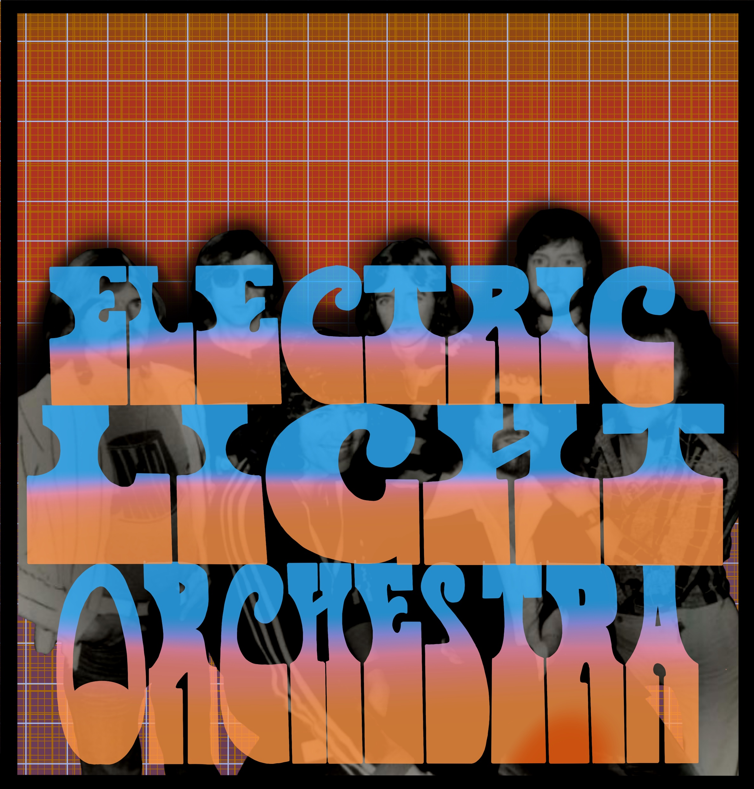
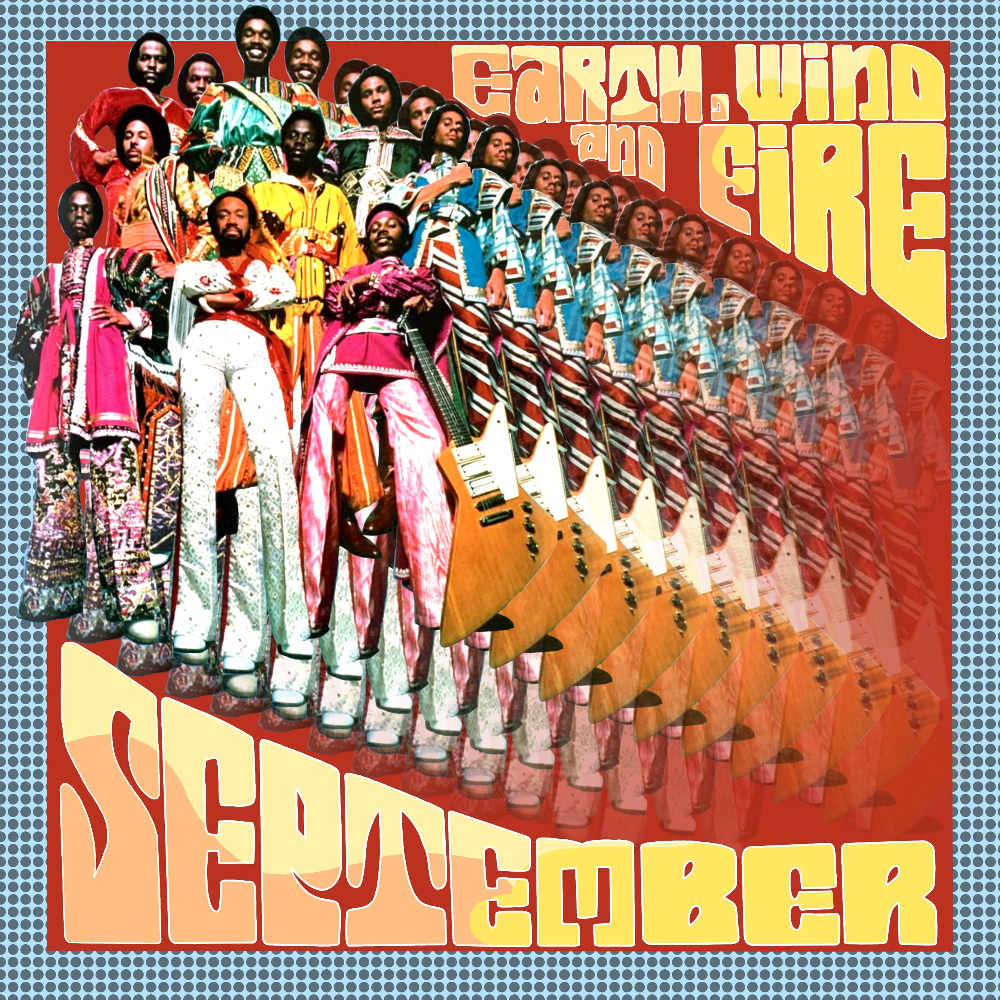
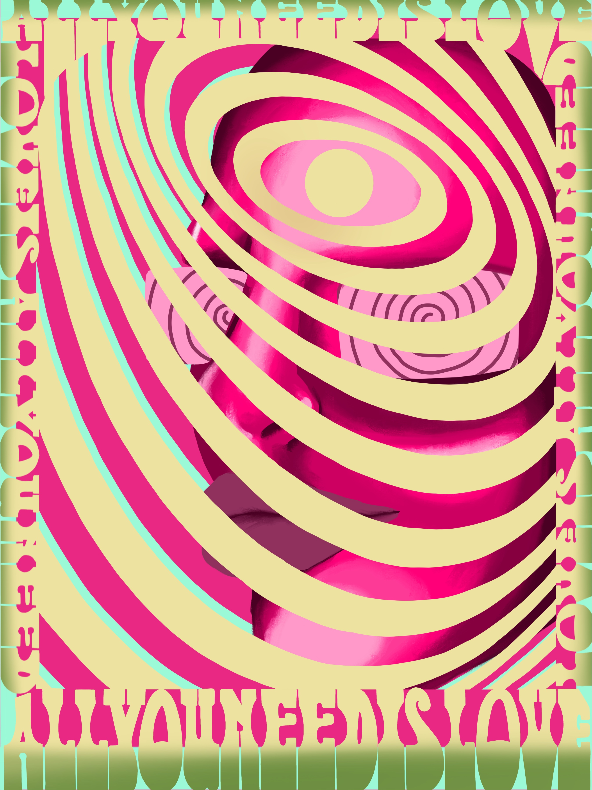
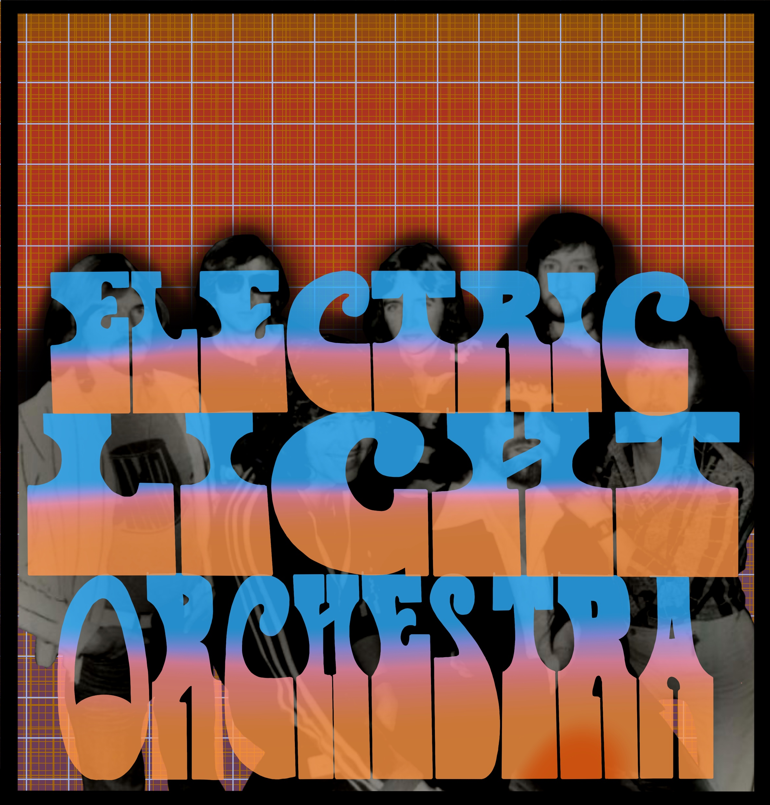
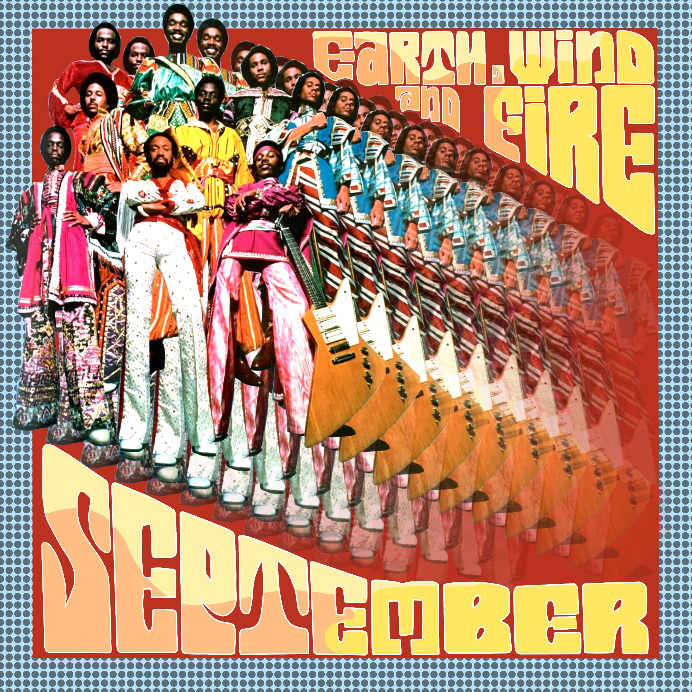